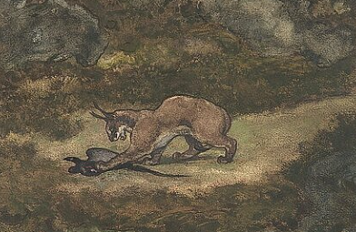
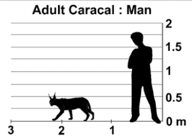
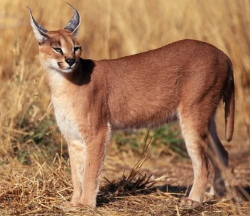
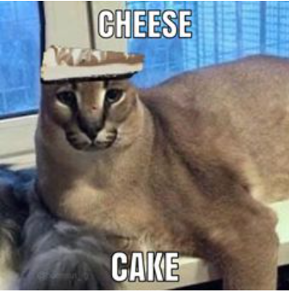

Chinese emperors used caracals as gifts. In the 13th and the 14th centuries, Yuan dynasty rulers bought numerous caracals, cheetahs, and tigers from Muslim merchants in the western parts of the empire in return for gold, silver, cash, and silk.
In those times, caracals were exposed to a flock of pigeons and people would bet on which caracal would kill the largest number of pigeons. This probably gave rise to the expression "to put the cat among the pigeons".

The caracal appears to have been religiously significant in the Egyptian culture, as it occurs in paintings and as bronze figurines; sculptures were believed to guard the tombs of pharaohs. Embalmed caracals have also been discovered. Its pelt was used for making fur coats.
The caracal, along with the jackal (a wild canine), are perceived negatively by farmers, as they damage their livestock. However, these two species are perceived as charismatic because of their physical appearance, "cunning" nature and remarkable adaptability to human activities.
Since the colonial stories, both jackals and caracals have been considered enemies and vermin, and caracals have by farmers been considered "insentient killing machines", because of their predation on farmers' livestock.
Caracals, despite their predatory habits, are considered fascinating and beautiful.
Farmers may project their own stories onto caracals, making them a symbol for various human emotions.
Caracals are more popular with city-dwellers who do not have to worry about losing their livestock.
A carnivore, the caracal typically preys upon small mammals, birds, and rodents. Studies in South Africa have reported that it preys on the Cape grysbok, the common duiker, sheep, goats, bush vlei rats, rock hyraxes, hares, and birds. A study in western India showed that rodents comprise a significant portion of the diet. They will feed from a variety of sources, but tend to focus on the most abundant one. Grasses and grapes are taken occasionally to clear their immune system and stomach of any parasites.

Larger antelopes such as young kudu, bushbuck, impala, mountain reedbuck, and springbok may also be targeted. Mammals generally comprise at least 80% of the diet. Lizards, snakes, and insects are infrequently eaten. In South Africa, caracals have been documented preying on small livestock in areas where sheep and goat are farmed. Livestock is however only a small and seasonal portion of their diet when wild prey is scarce.
Its speed and agility make it an efficient hunter, able to take down prey two to three times its size. The powerful hind legs allow it to leap more than 3 m (10 ft) in the air to catch birds on the wing. It can even twist and change its direction mid-air. It is an adroit climber. It stalks its prey until it is within 5 m (16 ft), following which it can launch into a sprint. While large prey such as antelopes are suffocated by a throat bite, smaller prey are killed by a bite on the back of the neck. Kills are consumed immediately, and less commonly dragged to cover. It returns to large kills if undisturbed.

It has been observed to begin feeding on antelope kills at the hind parts. It may scavenge at times, though this has not been frequently observed. It often has to compete with foxes, wolves, leopards, and hyaena for prey.
A caracal has a sleek coat of reddish gold short hair and a line of white fur around each of its eyes. This cat’s ears stand straight up and are topped off by long black tufts of hair. No one is sure why caracal ears have tufts of hair on them. But, some scientists believe that caracals communicate with one another by twitching their ears.

A caracal’s tail is about 8 to 13 inches long. In other words, the average caracal’s tail is about as long as the ruler you use in school. A caracal’s tail helps it to turn and stay on course when chasing a bird, rabbit or other prey. Think of a caracal’s tail like a rudder on a boat.
An adult caracal can weigh from 20 to 40 pounds. To give you a better idea, a 30-pound caracal weighs as much as two bowling balls! A caracal is about 24 to 42 inches long and 18 inches tall from its shoulder. That makes it about as tall as a Border Collie.
Caracals are closely related to servals. They are about the same size but live in different types of places. Servals like to hunt in humid, wet areas while caracals stay in dry, desert environments.

A caracal has long, strong legs. When hunting, its legs work like coiled springs as it leaps into the air to grab a bird as it flies away.
Caracals have sharp claws that help them to grab onto trees and climb up into the branches. They also use their claws to hunt and capture prey. Caracals mark their territory by clawing trees and releasing scent from between their toes.
Big Floppa, or simply Floppa, is an internet meme based around a Russian caracal cat named Gosha,also referred to as Gregory.
The original Big Floppa following spawned an internet subculture based on caracal memes in general. The community is active on a number of social media platforms such as Telegram and Matrix, with multiple groups devoted to the creation and sharing of such material.

In the caracal community the term "Floppa/floppas" (lowercase when used generically) has come to refer to caracals in general, and especially to a number of other named pet caracals with a social media presence or YouTube following that have originated their own memes.
Big Floppa, as a distinct title, is now usually reserved for Gosha alone, and is often compared with rap monikers as it is very similar to many rappers' scene names, with "Big Floppa" itself being a reference to the 1994 Notorious B.I.G song Big Poppa.

The meme did not see significant spread outside of ironic meme pages until April 2020. During the February – April 2020 period, ironic Instagram posted "floppa" memes, using the word to refer to the caracal as well as other medium-sized and small cats such as lynxes and servals.